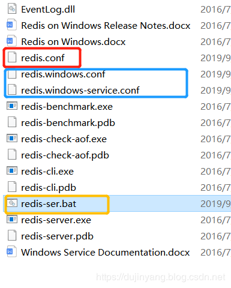
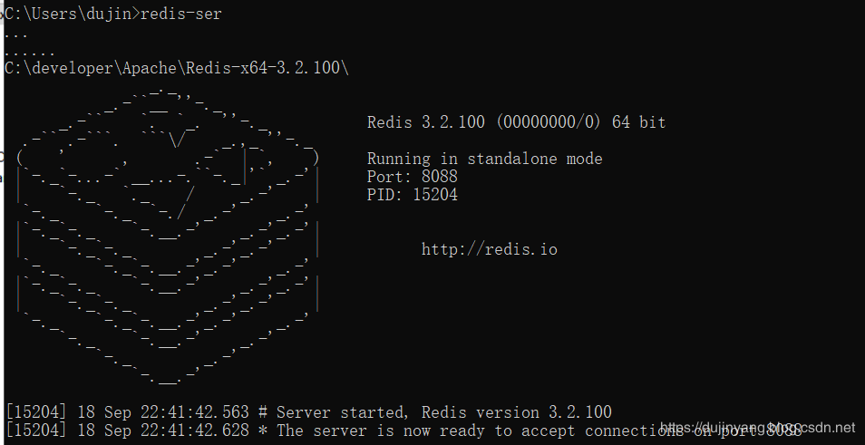

转载请标明出处：
http://dujinyang.blog.csdn.net/
本文出自:【奥特曼超人的博客】
配置环境变量，直接CMD中启动，默认是打开redis.conf，当然，压缩包是没有的，这里是自行创建的 redis.windows-service.conf 和 redis.windows.conf 对应服务端和客户端的使用。
直接启动应该都会遇到这个提示警告warning，这里不是win7，懒得去找etc下的文件，也没找到……
Warning: no config file specified, using the default config. In order to specify a config file use redis-server /path/to/redis.conf所以这里自己写了redis-ser.exe 和redis-ser.bat 作为调用，在命令行CMD输入就可以调起。


加入启动服务：
redis-server.exe --service-install redis.windows.conf命令：
redis-server redis.windows.conf
redis-cli –h 127.0.0.1 –p 8088<port> -a dujinyang<pwd> 快速启动：
redis-ser 或 redis-cli2日志记录级别：loglevel notice (Redis支持四个级别：debug、verbose、notice、warning)
日志记录方式:logfile ""
数据库的数量：databases 16 (可以使用SELECT<dbid>命令在连接上指定数据库id)
指定在多长时间内，有多少次更新操作，将数据同步到数据文件: save <seconds> <changes>
save 900 1 //900秒至少有1次更新同步到数据文件
save 300 10 //300秒至少有10次更新同步到数据文件
save 60 10000 //60秒如果有10000次更新同步到数据文件
指定存储至本地数据库时是否压缩数据: rdbcompression yes.
默认为yes，Redis采用LZF压缩，如果为了节省CPU时间，可以关闭该选项，但会导致数据库文件变的巨大。
指定本地数据库文件名: dbfilename dump.rdb
指定本地数据库存放目录: dir ./
设置当本机为slav服务时，设置master服务的IP地址及端口，在Redis启动时，它会自动从master进行数据同步: slaveof <masterip> <masterport>
当master服务设置了密码保护时，slav服务连接master的密码: masterauth <master-password>
设置Redis连接密码，如果配置了连接密码，客户端在连接Redis时需要通过AUTH<password>命令提供密码: requirepass foobared(默认关闭)
设置同一时间最大客户端连接数，默认无限制，Redis可以同时打开的客户端连接数为Redis进程可以打开的最大文件描述符数，如果设置 maxclients 0，表示不作限制。 当客户端连接数到达限制时，Redis会关闭新的连接并向客户端返回max number of clients reached错误信息: maxclients 10000
指定Redis最大内存限制，Redis在启动时会把数据加载到内存中，达到最大内存后，Redis会先尝试清除已到期或即将到期的Key，当此方法处理 后，仍然到达最大内存设置，将无法再进行写入操作，但仍然可以进行读取操作。Redis新的vm机制，会把Key存放内存，Value会存放在swap区: maxmemory <bytes>
指定是否在每次更新操作后进行日志记录，Redis在默认情况下是异步的把数据写入磁盘，如果不开启，可能会在断电时导致一段时间内的数据丢失。因为 redis本身同步数据文件是按上面save条件来同步的，所以有的数据会在一段时间内只存在于内存中。appendonly no (默认为no)
指定更新日志文件名。appendfilename "appendonly.aof"
指定更新日志条件。appendfsync everysec
appendfsync always //表示每次更新操作后手动调用fsync()将数据写到磁盘（慢，安全）
appendfsync everysec //表示每秒同步一次（折衷，默认值）
appendfsync no //表示等操作系统进行数据缓存同步到磁盘（快）
指定包含其它的配置文件，可以在同一主机上多个Redis实例之间使用同一份配置文件，而同时各个实例又拥有自己的特定配置文件。
include /path/to/local.conf作者：奥特曼超人Dujinyang
来源：CSDN
原文：https://dujinyang.blog.csdn.net/
版权声明：本文为杜锦阳原创原创文章，转载请附上博文链接！